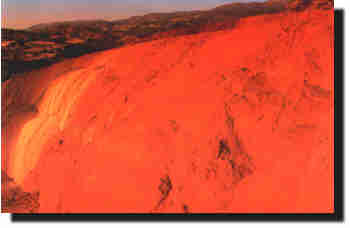

Karahayýt Kýrmýzýsu
Kýrmýzýsu; Akköy ilçesi, Karahayýt Kasabasý içindedir. Pamukkale'nin yaklaþýk
5 km kuzeyindedir. Kýrmýzýsu Travertenleri, 60o sýcaklýkta çýkan termal
su çevresinde oluþmuþtur. Termal suyun içindeki maden oksitleri nedeni ile
kýrmýzý, yeþil ve beyaz renkli traverten tabakalarý oluþturmaktadýr.
Yakýn zamana kadar daha çok iç turizme hizmet veren Karahayýt Kaplýcalarý artan
konaklama tesisleri ile önem kazanmýþ ve Pamukkale'den sonra turizmdeki yerini
almýþtýr.
Karahayýt Kýrmýzýsu Travertenleri yaklaþýk 500 m2'lik bir alandadýr.
Doðal güzelliði bakýmýndan ilin görülmeye deðer önemli turizm beldelerinden birisidir.